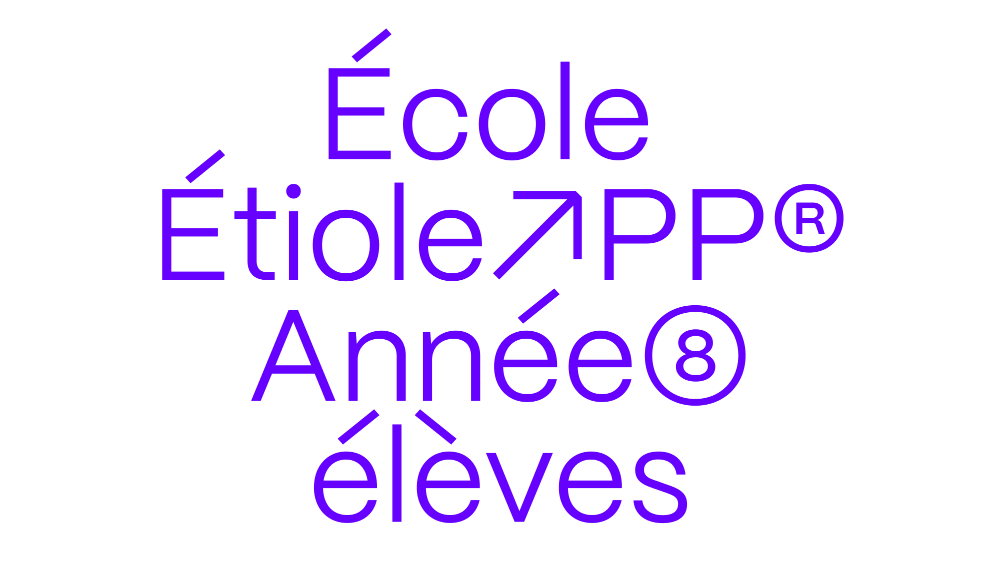
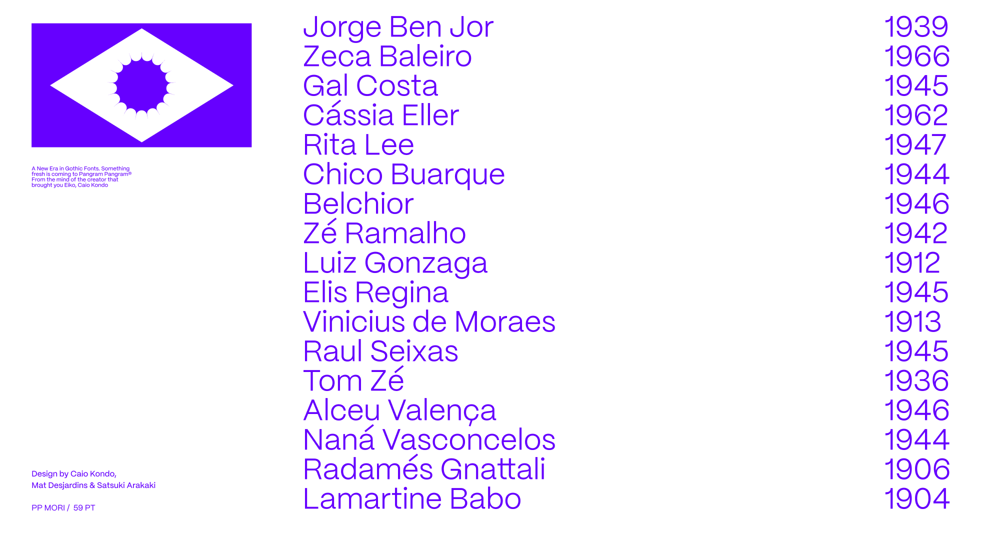
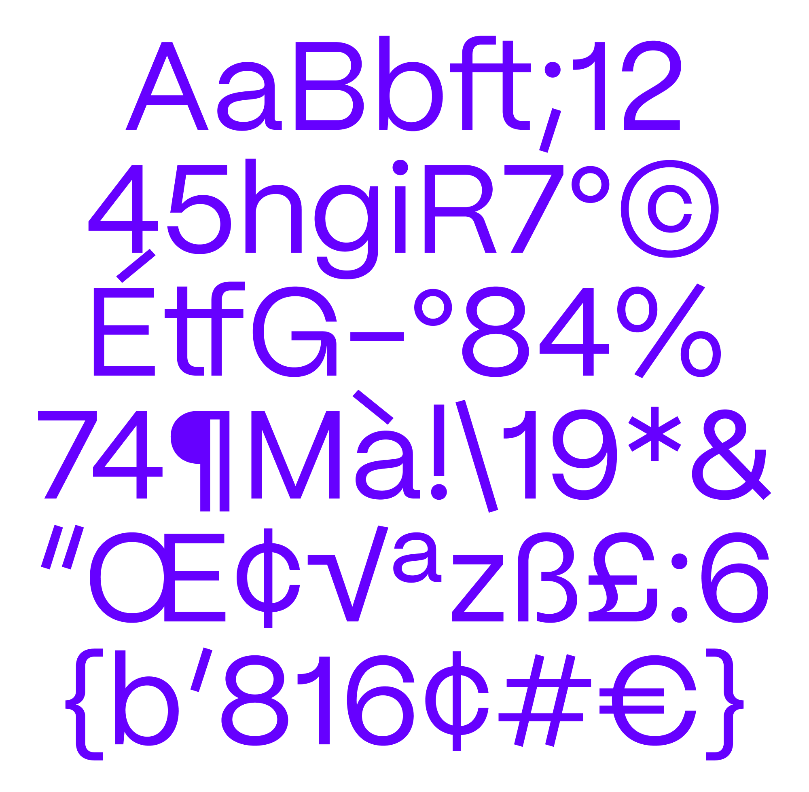
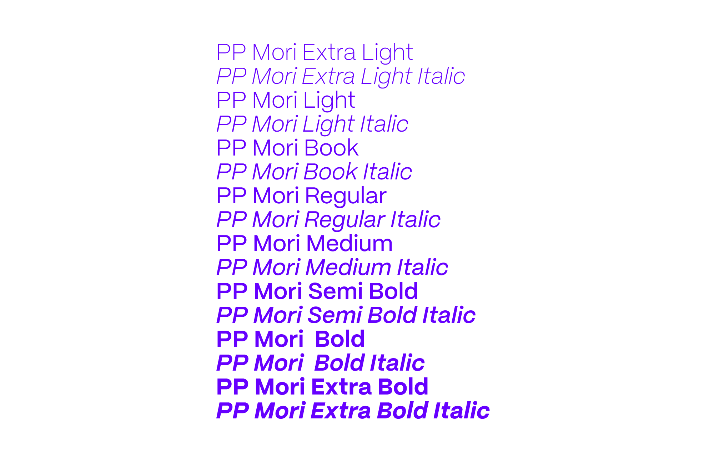

Inari Type
Information
Article
Mori
Try it
Mori is a versatile and sophisticated gothic sans serif inspired by contemporary Japanese design, best suited for editorial, graphic design and branding.
From ExtraLight to ExtraBold, it has 16 styles, each one includes 597 glyphs with plenty of open type features, including sets with circled and squared numbers, subscript and superscript numbers, symbols and punctuations (some of them Japanese), graphic and mathematical symbols and many alternates
Typography:
Caio Kondo
Mat Desjardins
Satsuki Arakaki
April 2022
Version 1.0
Styles:
16 Styles with 597 Glyphs each



